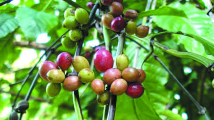

美式咖啡（Americano）
美式咖啡是一種將濃縮咖啡加水製成的飲品，使其味道較為淡雅，類似於普通的黑咖啡。

濃縮咖啡（Espresso）
濃縮咖啡是一種使用壓力濃縮咖啡粉製成的濃郁咖啡，是製作其他咖啡飲品的基礎。

卡布奇諾（Cappuccino）
卡布奇諾是一種由濃縮咖啡、蒸汽牛奶和奶泡組成的意式咖啡，通常呈現三層結構。

拿鐵咖啡（Latte）
拿鐵咖啡是一種由濃縮咖啡和大量蒸汽牛奶組成的咖啡，奶泡較少，呈現濃郁而滑順的口感。

摩卡咖啡（Mocha）
摩卡咖啡是一種結合濃縮咖啡、巧克力和蒸汽牛奶的飲品，通常搭配奶泡和巧克力裝飾。